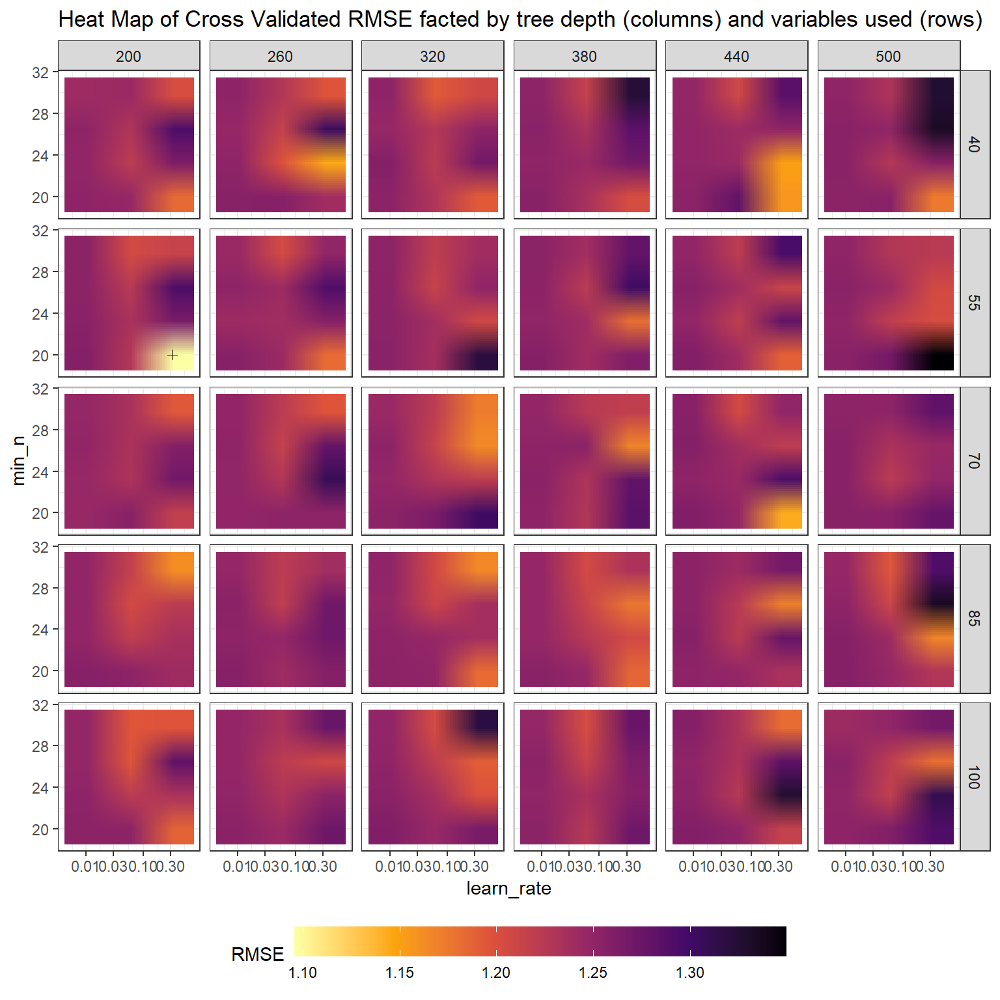
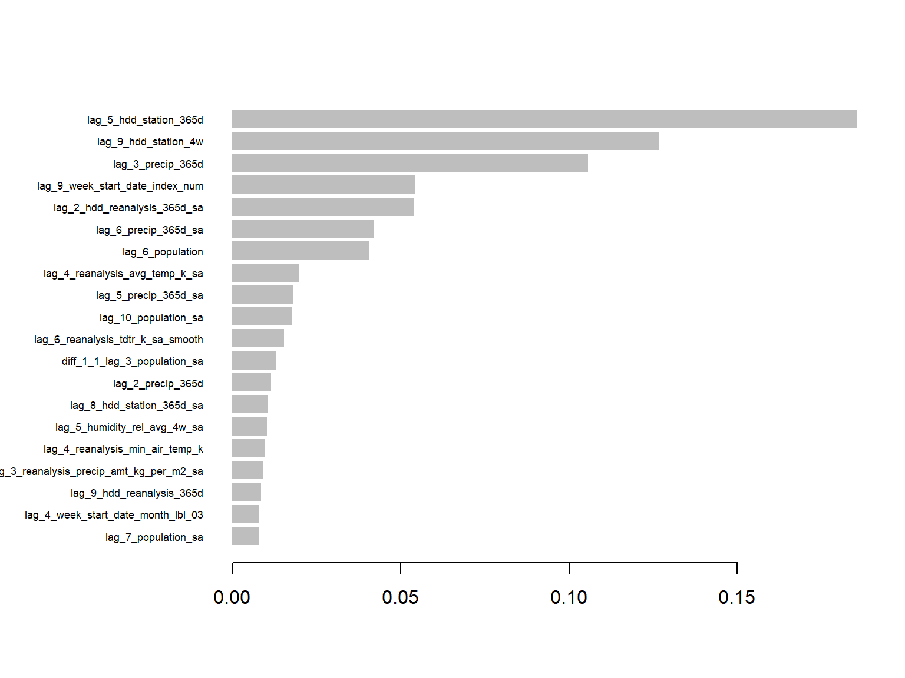
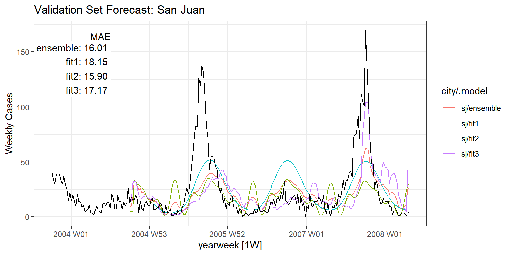

Dengue Fever is a disease transmitted by mosquitoes and affects a large portion of the developing world. Being able to accurately predict outbreaks of Dengue Fever will aid governments and non-profits to allocate resources more efficiently.
This paper will develop models to forecast weekly Dengue Fever cases in Iquitos, Peru and San Juan, Puerto Rico. Three types of models will be estimated: an average seasonality plus trend linear model, an ARIMAX model, and a prophet model with boosted errors.
Methodology
Data Description & Exploration
The dataset is provided by Driven Data where a training set and test set are given. The training dataset not only contains weekly Dengue Fever cases but various weather variables including precipitation, humidity, various temperatures, vegetation growth, and annual population levels for each city. Because Dengue Fever is transmitted from mosquitoes, we are essentially forecasting mosquito populations. This is used as a theoretical guide for feature engineering and modeling. Several other variables are created from these existing exogenous variables:
Growing Degree Days (GDD): GDDs are used to approximate mosquito population growth rates as they are positively correlated. A baseline of 10\(^\circ\)C is used with a cap of 45\(^\circ\)C. These are used because mosquito population begin growing around 10\(^\circ\)C and stop around 45\(^\circ\)C.
Rolling sums & averages: because weather can be volatile, rolling sums and averages are included in the models to better capture the factors that would cause mosquito populations to grow.
Cases have been relatively constant over time with occasional large outbreaks. San Juan appears to be possible getting the situation under more control, but Iquitos remains more elevated.
A complicating factor is the relation between the exogenous variables and case counts. The chart below highlights this complexity The interaction between tdtr and the minimum air temperature does not appear correlated with case counts until 4-week GDD are also accounted for. Then when it is accounted for, there are differing effects depending on how many GDDs there have been in the past 4 weeks.
Each of the three models attempts to forecast cases from a different perspective. The average season plus trend model implicitly makes the assumption that cases are not determined by exogenous variables, they’re mostly a seasonal random walk with drift. This model forecasts Box-Cox transformed cumulative cases.
The ARIMAX likewise models Box-Cox transformed cumulative cases but includes an ordinary difference, thus models transformed weekly cases. Seasonality is captured in both these models with the inclusion of Fourier terms. ARIMAX also includes exogenous variables to make the prediction. It makes the assumption that cases are autocorrelated but also linearly dependent on other variables.
The last model is a prophet model with boosted errors. A Prophet model is first fit to the series which captures the seasonality and trend of the series. The xgboost algorithm is then fit to the errors using exogenous variables and the hyperparameters are selected through cross validation. Where the first two models are linear, both components of this model, the Prophet and boosted trees, are nonlinear and may better model the exponential nature of Dengue Fever cases. The two linear models necessitate that the dependent variable is transformed in a way to more closely resemble linearity.
Modeling Training
The training set provided by Driven Data is separated into two sets: a training and validation set. Iquitos models were trained on 2000-06-26 UTC–2008-06-23 UTC with the validation set covering 2008-06-30 UTC–2010-06-21 UTC. San Juan models were trained on 1990-04-30 UTC–2004-09-20 UTC with the validation set covering 2004-09-27 UTC–2008-04-21 UTC.
The validation set was used to guide the variable selection and the hyperparameter tuning.
Model 1: Average Seasonality Plus Trend
To capture the average seasonality, Fourier terms were used as exogenous variables. A trend component was also included. The dependent variable is a Box-Cox tranformed Cumulative Case count, the lambda was chosen based on validation set forecast performance.
The modeling diverges between the two cities in the ARIMAX models; variables seemed to have differing predictive power depending on the city. As such, the modeling was separated and variables were selected to increase predictive power. One method that was employed was by regressing exogenous variables on the model innovations in an OLS model to find which were statistically significant. Those that are were then included to determine if they aided the forecast on the validation set, they were removed if not.
Code
fit2.iq <- train %>%filter(city =="iq") %>%filter(cases_cumulative >10) %>%model(fit2 =ARIMA(box_cox(cases_cumulative, .7) ~1+fourier(K =5) +PDQ(D=0,Q=0) +lag(precip_4w, n =10) +lag(hdd_reanalysis_4w_sa * humidity_rel_avg_4w_sa, n =6)+lag(station_diur_temp_rng_c, n =5)+lag(hdd_reanalysis_365d_sa, n =5)+lag(hdd_station_365d, n =10)+lag(precip_365d_sa, n =8) ) )
Code
fit2.sj <- train %>%filter(city =="sj") %>%filter(cases_cumulative >100) %>%model(fit2a =ARIMA(box_cox(cases_cumulative, 1.3) ~1+fourier(K =2) +PDQ(P=0, D=0,Q=0) +lag(rollmean(reanalysis_min_air_temp_k, k =8, NA, align ="right"), n =8)+lag(hdd_reanalysis_4w, n =9)+lag(reanalysis_tdtr_k_sa_smooth, n =6)+ population ) )
Model 3: Prophet with Boosted Errors
The modeltime package was used for the Prophet with boosted errors model. The reasoning in selecting this model was to hopefully capture the nonlinearity and complicated interactions with the boosted trees.
This package follows the tidymodels approach by defining recipes and workflows. The following recipe is a set of data preprocessing steps.
The model will take multiple values for the ‘mtry’, ‘tree_depth’, ‘learn_rate’, and ‘min_n’ parameters. A grid is set up to cross validate the data for each parameter combination.
The follow faceted heatmap shows the average RMSE from the tuning parameters. The cross indicates the combination of parameters that minimizes the RMSE.
Code
collect_metrics(fit3.tuning_iq) %>%filter(.metric =="rmse") %>%rename(RMSE = mean) %>%ggplot(aes(x = learn_rate,y = min_n, fill = RMSE )) +geom_raster(interpolate = T) +geom_point(data =select_best(fit3.tuning_iq, "rmse"),inherit.aes = F,aes(x = learn_rate, y = min_n), shape =3 ) +# geom_point(# data = select_by_one_std_err(fit3.tuning_iq, "rmse"),# inherit.aes = F,# aes(x = learn_rate, y = min_n), # shape = 4# ) +scale_x_log10() +facet_grid(tree_depth ~ mtry, scales ="free_x") +scale_y_continuous(labels =label_comma()) +scale_fill_viridis_c(option ="B", direction =-1) +ggtitle("Heat Map of Cross Validated RMSE facted by tree depth (columns) and variables used (rows)") +theme_bw() +theme(legend.position ="bottom", legend.key.width =unit(2, "cm"))

The parameters that minimize the RMSE are used to fit the entire training set.
The ARIMAX models improve the residuals tremendously, but still are far from perfect. They both appear to struggle with modeling periods of steep growth, likely due to the exponential nature of it. Some autocorrelation remains, but is still much better.
Another advantage of the xgboost algorithm is the ability to view a variable importance plot. While it doesn’t indicate how a variable is correlated with cases, it does indicate which variables have some correlation, linear or nonlinear. Both models found differing lags of GDD, precipitation, and humidity to be important variables.
[09:11:13] WARNING: src/learner.cc:553:
If you are loading a serialized model (like pickle in Python, RDS in R) generated by
older XGBoost, please export the model by calling `Booster.save_model` from that version
first, then load it back in current version. See:
https://xgboost.readthedocs.io/en/latest/tutorials/saving_model.html
for more details about differences between saving model and serializing.
[09:11:13] WARNING: src/learner.cc:553:
If you are loading a serialized model (like pickle in Python, RDS in R) generated by
older XGBoost, please export the model by calling `Booster.save_model` from that version
first, then load it back in current version. See:
https://xgboost.readthedocs.io/en/latest/tutorials/saving_model.html
for more details about differences between saving model and serializing.

Model Performance on Validation Set
Each of the models will forecast the validation set to compare their predictive power.
An ensemble forecast will also be calculated as the simple average of the three models. This could prove to be a reliable forecast, especially since each of the three models approach the forecast quite differently.
Iquitos has a lower mean absolute error than San Juan, however, this is likely a result of having an average of 7.54 weekly cases to San Juan’s average of 34.1 during the training set. Surprisingly, the Seasonal Mean Plus Trend approach (Model 1) outperforms the ARIMAX approach (Model 2) for Iquitos. The best model likely is the ensemble model as it’s only slightly edged out for both cities.
fx.sj %>%autoplot(predicted_cases) +autolayer( train.all %>%filter(city =="sj") %>%filter(week_start_date >=ymd(valid.start.sj) -weeks(52)), total_cases ) +ylab("Weekly Cases") +annotate("text", x =12600, y =161,label ="MAE", vjust =0, hjust =1 ) +annotate("label", x =12600, y =160,label = mae.valid %>%filter(city =="sj") %>%select(-city) %>%apply(., 1, \(x){paste0(x[1], ": ", label_comma(accuracy = .01)(as.numeric(x[2])))}) %>%paste(collapse ="\n"),vjust =1, hjust =1 ) +ggtitle("Validation Set Forecast: San Juan")

Code
mae.valid %>%mutate(.model =ifelse(.model =="fit2a", "fit2", .model)) %>%pivot_wider(names_from = city, values_from = mae) %>%mutate(model_description =case_when( .model =="ensemble"~"Simple average of other models", .model =="fit1"~"Average seasonality plus trend", .model =="fit2"~"ARIMAX", .model =="fit3"~"Prophet with Boosted Trees", ) ) %>%relocate(.model, model_description)
# A tibble: 4 × 4
.model model_description iq sj
<chr> <chr> <dbl> <dbl>
1 ensemble Simple average of other models 6.89 16.0
2 fit1 Average seasonality plus trend 7.41 18.2
3 fit2 ARIMAX 8.13 15.9
4 fit3 Prophet with Boosted Trees 6.37 17.2
Final Fit
All models are then refit over the entire pre-test set data, both training and validation sets, before making their final predictions.
The models struggled to truly capture the peaks on the validation set, though they appeared to capture the far-less-volatile shoulder months. The likely culprit is using linear models on exponential data without sufficiently transforming it. The boosted Prophet model was the only one able to semi-accurately predict a peak in validation and predicts varying peaks in the test set. More fine-tuning and tweaking of the linear models will improve the ensemble even more and that should likely be the forecast most relied on. Another model that should be considered is a generalized linear model of the negative binomial family which should be better fit to handle exponentially rising cases.
The biggest limitation on these models is that they are location-specific. Different variables and parameters were used for each city making it difficult to generalize these to other locations. While a generalized approach could mean the same data could be used to make predictions elsewhere, we are constrained to only the methodology: new models must be estimated on that locations’ data to forecast.